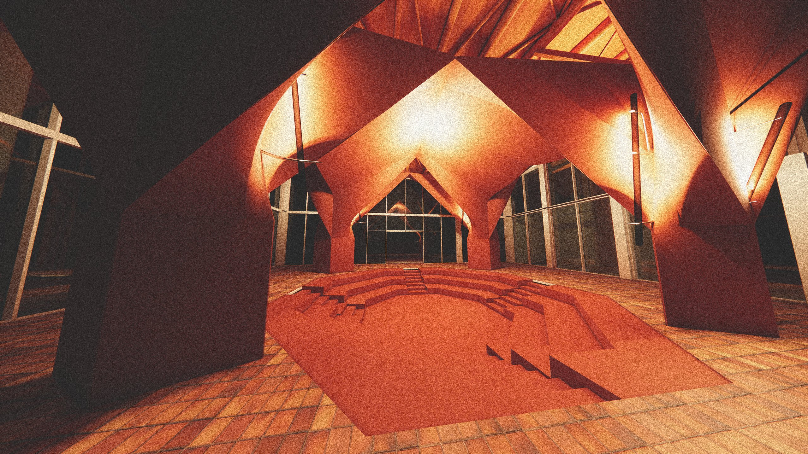
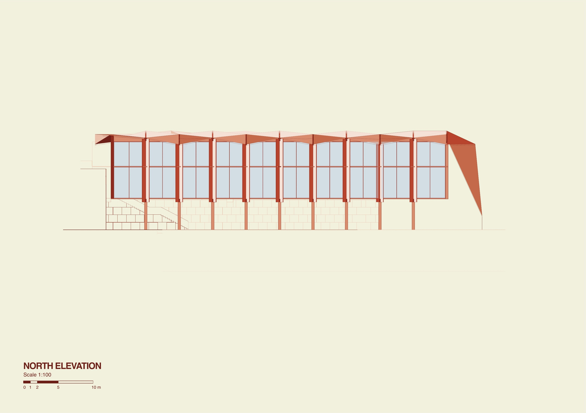

Existing
The 1955 chancery has one of the first flat roofs in Madrid.
A contemporary terracotta roof
Style is cyclical. The project is a contemporary take on terracotta roofing, and it starts with a few gestures.
Two slices
Two slices through the existing west buildings, where the new work will meet the old.
New masses
The ancillary, raised on stone piers, and new glass faces in the two sliced buildings.
Regrade
The ground is cut in three places and drops from the plateau toward the Castellana level.
Stairs
Stone stairs tie the cuts back to the ground.
Roof
Three tessellated roofs, over the ancillary and the two sliced buildings.
The rhythm of the tower
The ancillary and the two sliced buildings carry three tessellated terracotta roofs that follow the exact rhythm of the embassy tower.
The roof system
The roof, taken apart layer by layer.
From below
Ribs bear on beams, beams on struts, and struts on the columns.
Shells
Terracotta shells wrap the columns of the middle building, after the Spanish-Mexican architect Félix Candela's hyperbolic paraboloid columns at the Church of Our Lady of the Miraculous Medal, Mexico City (1953–55).
Inside
The shells over the sunken floor, at eye level.
A multi-program hall
One room for many uses. Today, a lecture in the round.